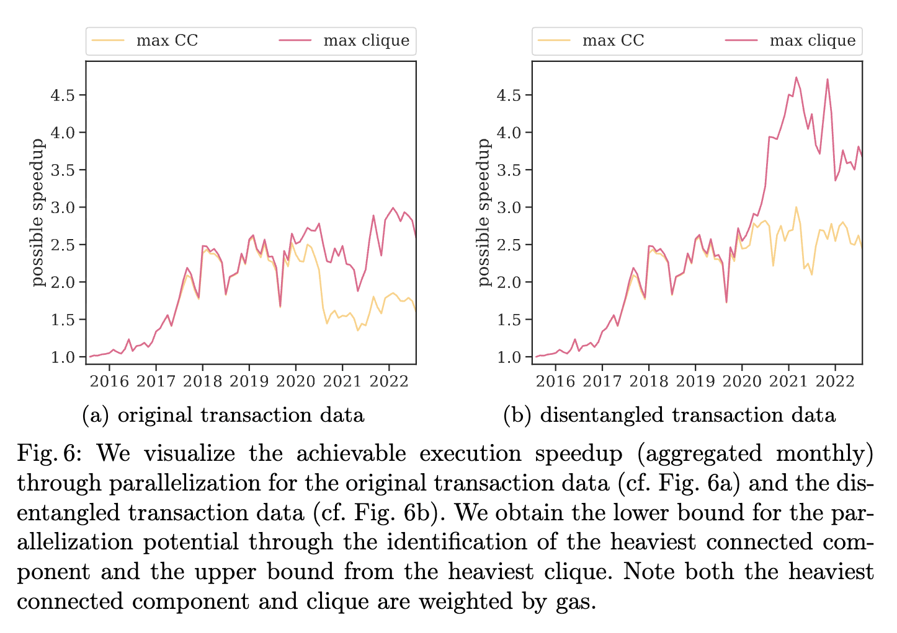

Lioba Heimbach, Quentin Kniep, Yann Vonlanthen, Roger Wattenhofer
FC 2023
Many classical blockchains are known to have an embarrassingly low transaction throughput, down to Bitcoin's notorious seven transactions per second limit. Various proposals and implementations for increasing throughput emerged in the first decade of blockchain research. But how much concurrency is possible? In their early days, blockchains were mostly used for simple transfers from user to user. More recently, however, decentralized finance (DeFi) and NFT marketplaces have completely changed what is happening on blockchains. Both are built using smart contracts and have gained significant popularity. Transactions on DeFi and NFT marketplaces often interact with the same smart contracts. We believe this development has transformed blockchain usage.
In our work, we perform a historical analysis of Ethereum's transaction graph. We study how much interaction between transactions there was historically and how much there is now. We find that the rise of DeFi and NFT marketplaces has led to an increase in "centralization" in the transaction graph. More transactions are now interconnected: currently there are around 200 transactions per block with 4000 interdependencies between them. We further find that the parallelizability of Ethereum's current interconnected transaction workload is limited. A speedup exceeding a factor of five is currently unrealistic.

@inproceedings{heimbach2023DefiAnd,
author = {Lioba Heimbach and Q. Kniep and Yann Vonlanthen and Roger Wattenhofer},
title = {DeFi and NFTs Hinder Blockchain Scalability},
booktitle = {FC 2023},
year = {2023}
}